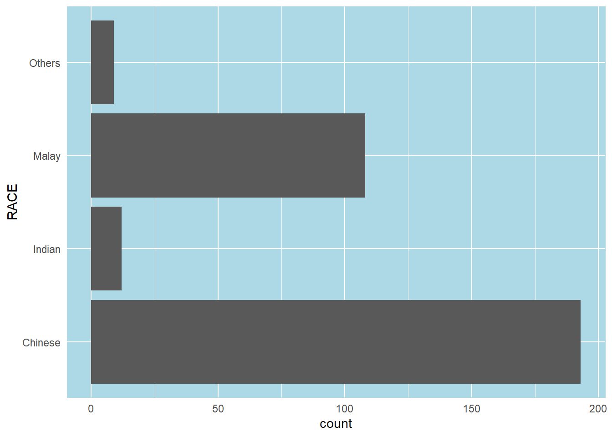
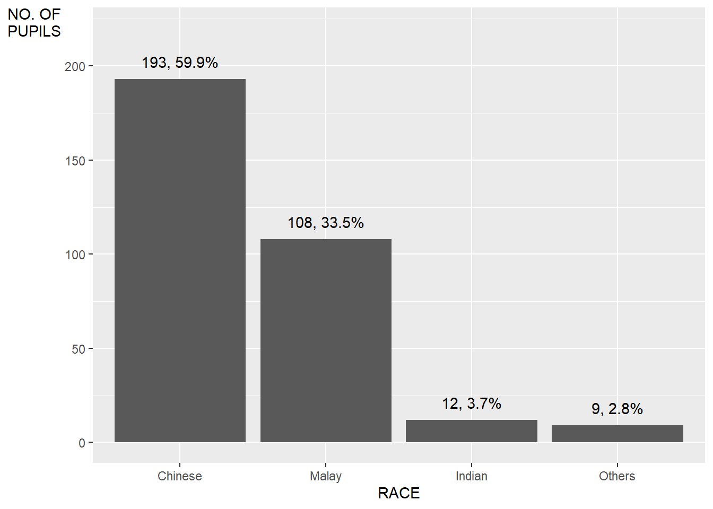
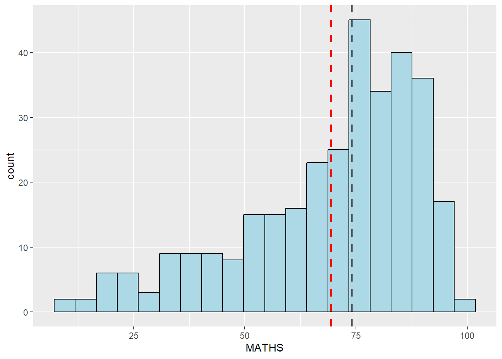
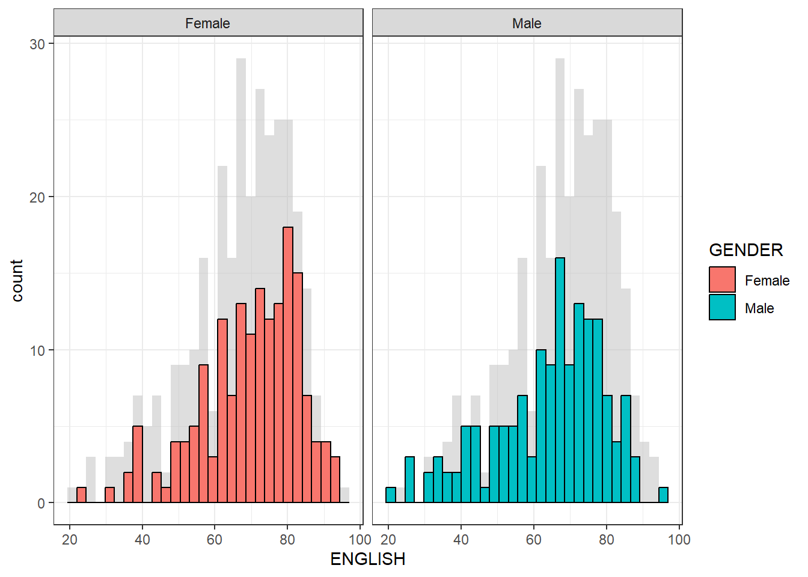

Code
pacman::p_load(tidyverse)pacman::p_load(tidyverse)exam_data <- read_csv("data/Exam_data.csv")Plot a horizontal bar chart
ggplot(data=exam_data,
aes(x=RACE)) +
geom_bar() +
coord_flip() +
theme_minimal() +
theme(
panel.background = element_rect(fill = "lightblue", colour = "lightblue",
linewidth = 0.5, linetype = "solid"),
panel.grid.major = element_line(linewidth = 0.5, linetype = 'solid', colour = "white"),
panel.grid.minor = element_line(linewidth = 0.25, linetype = 'solid', colour = "white"))
In this example, we will revise the vertical bar chart to provide additional information.
The left tab panel shows the original vertical bar chart, while the right panel shows the revised version of the vertical bar chart.
A simple vertical bar chart for frequency analysis.
Critics:
ggplot(data=exam_data,
aes(x = RACE)) +
geom_bar()
The revised vertical bar chart will show:
ggplot(data = exam_data,
aes(x = reorder(RACE, RACE,
function(x)-length(x)))) +
geom_bar() +
ylim(0,220) +
geom_text(stat="count",
aes(label=paste0(after_stat(count), ", ",
round(after_stat(count)/sum(after_stat(count))*100, 1), "%")),
vjust=-1) +
xlab("RACE") +
ylab("NO. OF\nPUPILS") +
theme(axis.title.y=element_text(angle = 0))
In this example, we will improve the aesthetics of the histogram.
The left tab panel shows the original version of the histogram plotted, while the right panel shows the revised version, with added information of the mean and median lines.
A simple histogram.
ggplot(data=exam_data,
aes(x = MATHS)) +
geom_histogram(bins=30)
We will
ggplot(data = exam_data,
aes(x=MATHS)) +
geom_histogram(bins=20,
fill="light blue",
color="black") +
geom_vline(aes(xintercept=mean(MATHS, na.rm=T)),
color="red",
linetype="dashed",
linewidth=1) +
geom_vline(aes(xintercept=median(MATHS, na.rm=T)),
color="grey30",
linetype="dashed",
linewidth=1)
The original histograms on the left tab (Original) are elegantly designed but not informative. This is because they only reveal the distribution of English scores by gender but without context such as all pupils.
In this example, on the right tab (Revised), we will show the distribution of English scores by gender and also include the histogram of all pupils at the background.
ggplot(data=exam_data, aes(x = ENGLISH)) +
geom_histogram(bins=30) +
facet_grid(~ GENDER)
backgd_data <- exam_data
d_bg <- backgd_data[, -3]
ggplot(backgd_data, aes(x = ENGLISH, fill = GENDER)) +
geom_histogram(data = d_bg, fill = "grey", alpha = .5, bins=30) +
geom_histogram(colour = "black", bins=30) +
facet_wrap(~ GENDER) +
guides(none) +
theme_bw()
In this example, we will beautify (makeover) the scatterplot from left tab (Original) to right tab (Revised)
ggplot(data=exam_data,
aes(x=MATHS, y=ENGLISH)) +
geom_point() 
ggplot(data=exam_data,
aes(x=MATHS, y=ENGLISH)) +
geom_point() +
coord_cartesian(xlim=c(0,100),
ylim=c(0,100)) +
geom_hline(yintercept=50,
linetype="dashed",
color="grey60",
linewidth=1) +
geom_vline(xintercept=50,
linetype="dashed",
color="grey60",
linewidth=1)